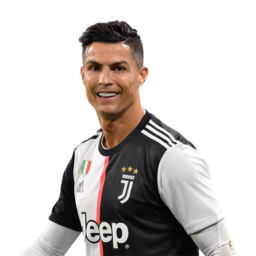

Cristiano Ronaldo é um jogador de futebol excepcionalmente talentoso e dedicado que inspira emoção e admiração em milhões de fãs em todo o mundo. Sua carreira no esporte tem sido marcada por uma incrível habilidade técnica, velocidade e força física, bem como uma paixão inabalável pela vitória. O que torna Cristiano Ronaldo emocionante é sua capacidade de elevar seu jogo em momentos decisivos e inspirar seus companheiros de equipe a fazer o mesmo. Ele é um líder natural que não só é um jogador excepcional em campo, mas também um modelo de dedicação e disciplina fora dele. Além disso, Cristiano Ronaldo é conhecido por sua generosidade e amor por sua família, amigos e fãs. Ele é um exemplo de como um atleta de elite pode usar sua plataforma para fazer a diferença na vida das pessoas e ajudar aqueles que mais precisam. Por todas essas razões, Cristiano Ronaldo é um jogador emocionante de assistir e um modelo a ser seguido para muitos. Ele representa o melhor do esporte, tanto em termos de habilidade quanto de ética de trabalho e dedicação à equipe e à comunidade.


Cristiano Ronaldo
Uma máquina
